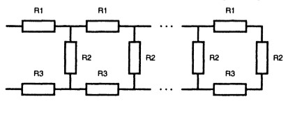

Рекурсія у мові С
Рекурсія досить поширене явище, яке зустрічається не тільки в областях науки, а й у повсякденному житті. Наприклад, ефект Дросте, трикутник Серпінського і т. д. Найпростіший варіант побачити рекурсію - це навести веб-камеру на екран монітора комп'ютера, природно, попередньо її включивши. Таким чином, камера буде записувати зображення екрану комп'ютера, і виводити його ж на цей екран, вийде щось на зразок замкнутого циклу. У підсумку ми будемо спостерігати щось схоже на тунель.
У програмуванні рекурсія тісно пов'язана з функціями, точніше саме завдяки функціям в програмуванні існує таке поняття як рекурсія або рекурсивна функція. Простими словами, рекурсія - визначення частини функції (методу) через саму себе, тобто це функція, яка викликає саму себе, безпосередньо (в своєму тілі) або побічно (через іншу функцію). Типовими рекурсивними завданнями є завдання: знаходження факторіалу числа, знаходження чискл Фібоначчі. Такі завдання ми вже вирішували, але з використанням циклів, тобто ітераційно. Взагалі кажучи, все те, що вирішується ітераційно можна вирішити рекурсивно, тобто з використанням рекурсивної функції. Все рішення зводиться до вирішення основного або, як ще його називають, базового випадку. Існує таке поняття як крок рекурсії або рекурсивний виклик. У разі, коли рекурсивна функція викликається для виконання складного завдання (НЕ базового випадку) виконується деяка кількість рекурсивних викликів або кроків, з метою зведення задачі до більш простої. І так до тих пір поки не отримаємо базове рішення. Приклад використання рекурсії наведемо далі.
Гарний стиль програмування
- Будь-яка проблема, котра може бути вирішена рекурсивно, може також бути вирішено ітераційно (нерекурсивно). Звичайно надається перевага ітераційному способу. У тих випадках, коли рекурсія більш природно відображає математичну сторону задачі і призводить до програми, котра простіша для розуміння та налагодження. Іншою причиною для вибору рекурсивного рішення є те, що ітераційне рішення може не бути очевидним.
- Уникайте використання рекурсії в ситуаціях, які потребують високої продуктивності програми. Рекурсивні звертання потребуються часу та використовують додаткову пам’ять.
Приклад програми
Умова задачі: Написати програму, яка обчислює опір електричного кола, схема якої приведена на рис. Величини опорів і порядок ланцюга (кількість опорів R2) повинні вводитися під час роботи програми.

//Calculates resistance of n-tier electric circuit
#include < stdio.h >
#include < conio.h >
#include < iostream >
float r1, r2, r3; //the resistances of which chain comprises
//calculates the resistance of the chain n-th order
float rcep(int n)
{
float r; //resistance of the chain of order n-1
if (n == 1)
return(r1 + r2 + r3);
else
{
r = rcep(n-1);
return (r1 + r2*r / (r2 + r) + r3);
}
}
void main()
{
system ("color F0");
int n; //number of units (the order) of the chain
float rc; //resistance of the chain
puts("Calculation the resistance of the circuit ");
puts("Enter the value of the resistance (Ohms):");
printf("r1 ->");
scanf("%f", &r1);
printf("г2 ->");
scanf("%f", &r2);
printf("r3 ->");
scanf("%f", &r3);
printf("The order of the chain ->");
scanf("%i", &n);
rc = rcep(n); //the resistances are transmitted
// to the function rcep through global variables
printf("The resistance of the circuit:");
if (rc > 100)
{
rc /= 1000;
printf("%5.2f kOhms\n", rc);
}
else
printf("%5.2f Ohms\n", rc);
puts("\nClick < Enter > to complete");
getch();
}
Завантажте "Аналіз коду" для подробиць.